CLI - First
Why & How
TRIGGER
WARNING
MEME CONTENT AHEAD
What's in it for me?
To leave or not to leave
Lessons learned
An occasional rant
Stereotypes & Memes
WHY?
¯\_(ツ)_/¯
The Obvious Ones
Shift Left
Learn & Grow
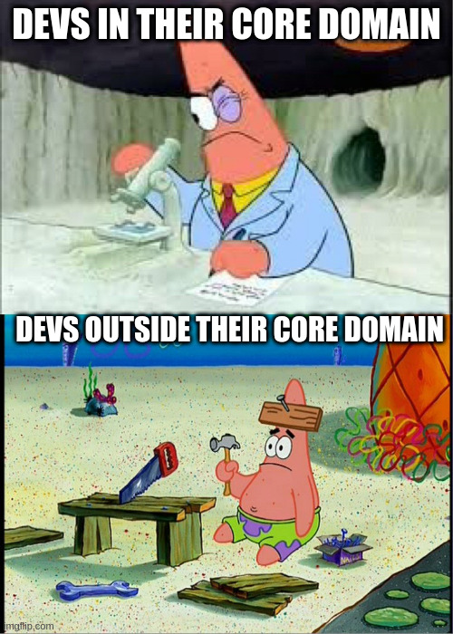
They are cool
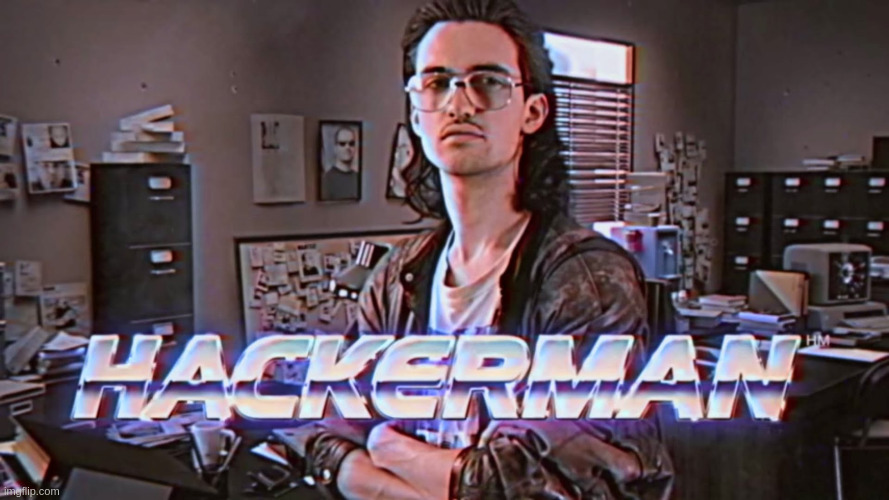
How?
42
We got you covered
Long Vs Short
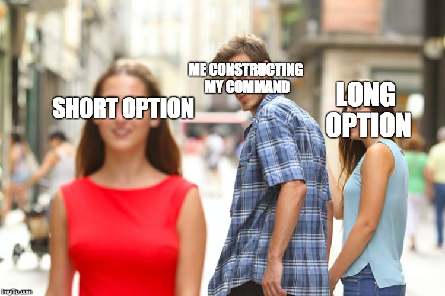
Help
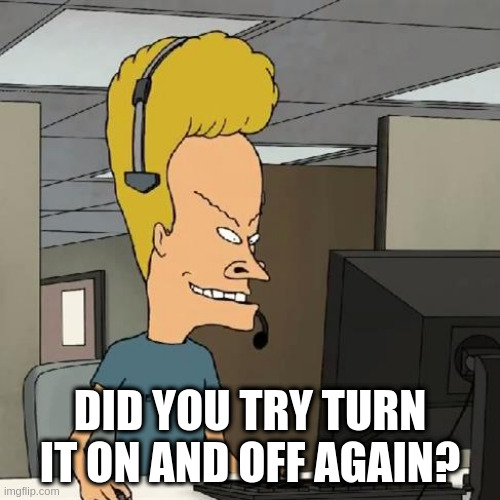
Usability
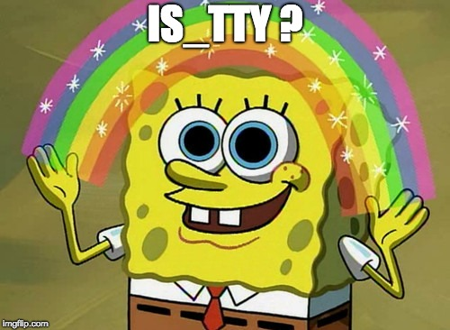
Configuration
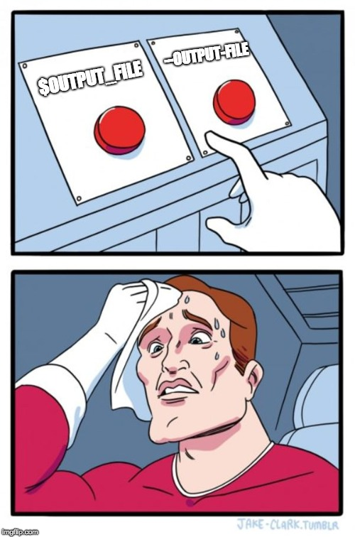
Robustness
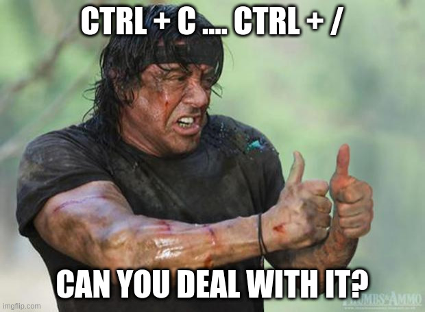
Error messages
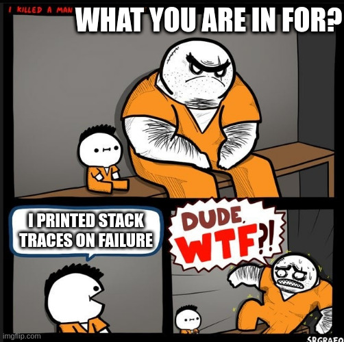
Status vs Output
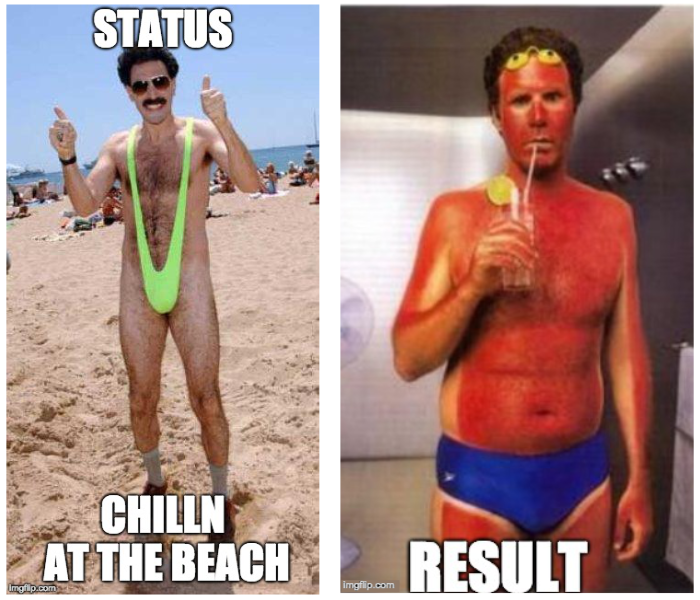
Exit Codes
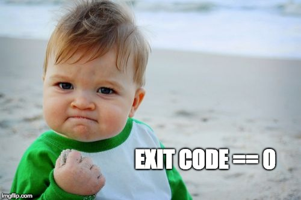
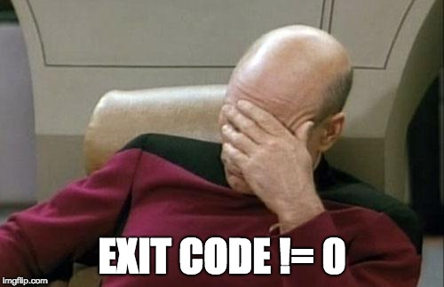
Living piece of SW
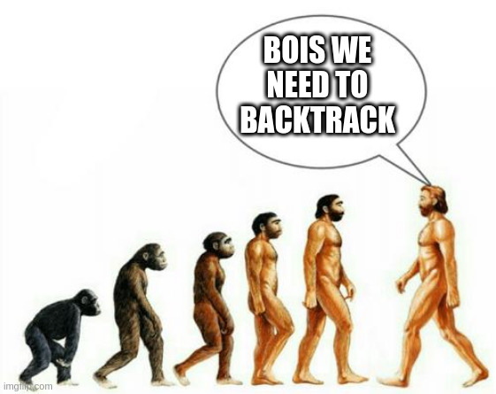
Drive Through
80/20
Communicate clearly
Use libraries for argument parsing
Separate Status & Errors from Output
Provide at least two exit code(s) 0 and one != 0
Pro-tip: In case of doubt check how git does it
Examples
Teasers
Extract TCP/UDP data stream with Tshark
Reporting and statistics
Socat based test server
rot13 ... aws pws & co
pygments based bat
...
EOF
-1